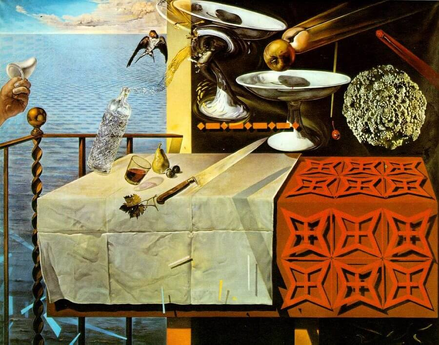

Red wire: right temple. Black wire: left temple.
As a math nerd, The Dismemberment Plan’s 1999 magnum opus was a perfect addition to the arsenal of my college soundtrack. It is elliptical and trigonometric, words I rarely get to use in an artistic context.
When music is so mathematical, I worry that explaining it as such will misrepresent it. Doesn’t it sound so… boring? Nobody wants to listen to math rock, for example, because it’s so terribly named1.
But if we understand mathematics as making sense from chaos, Emergency & I is as mathematical as mathematical gets. Wild guitars rage like waves crashing against one another in the middle of the ocean, drums echo across an empty plane. It has its frigid moments: “The Jitters” is slow and ringing, a depressed march forward. And it has its warm moments, too, like the organic and flowing “Back and Forth.”
Songs like “Back and Forth” and “Gyroscope” are fantastic studies in music that actually feels like its lyrics. There is no dissonance in the latter’s chorus, a swirling fray made even more gyroscopic when singer Travis Morrison’s voice wildly, delightfully undulates. It is geometric without ever being cold, and carries a precision that is still abundantly human.
This is what Pinkerton wishes it could be. Or, better yet, this is the album Weezer fans think Pinkerton is. It carries the sadness and bitterness of love and loss in your twenties without resentment or anger. It doesn’t condemn or condone pain or pleasure: instead, it analytically describes them.
This analytic mindset bleeds into the album as a whole. It is an actual antidote to chaos2. The cover calls to mind Dali’s The Persistence of Memory, but, frankly, the music reminds me more of Nature Morte Vivante. It exists in a flat but frenzied space, with carefully chosen sounds delivered with the confidence of improvised naturalism.
The album operates like a clock, mechanical and careful, and this is thanks in no small part to drummer Joe Easley. He is a machine. So much so, in fact, that I didn’t even realize an organic drummer was behind the album until my second or third listen. Even fast, complex tracks like “I Love A Magician” are no problem for Easley, who rides through them with ease.
Morrison, too, is frenetic and deeply entrenched in the music. His voice doesn’t just jump from place to place — it teleports, in classic sci-fi fashion. Not just from song to song, or even sentence to sentence — any note could be different from the last, and the unpredictability of Morrison’s voice sticks around even for repeat listens.
And believe me, there have been plenty of repeat listens. Emergency & I is one of those albums I can’t always stand to listen to. Sometimes, it’s grating or annoying. But when I’m in the mood, I can find the space to really appreciate everything going on on this album — and how could I ever not be entranced by “You Are Invited”?
1 The terrible naming of math rock isn’t just about making it sound boring. It’s also a total misnomer, just mathematical because it's maybe more "complicated" music.
2As opposed to the remedy offered by certain Mickey Mouse-impersonating Canadian professors.